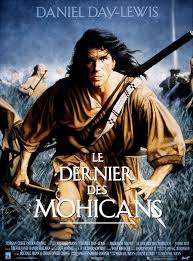
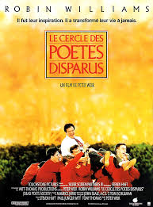
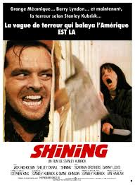

Après quelques années passées dans le sport automobile, j'ai souhaité me réorienter pour un donner un nouveau souffle à ma vie profesionnelle !
|  |
1992 - LE DERNIER DES MOHICANSEn juillet 1757, Montcalm remonte le lac Champlain et se dirige avec des soldats « aussi nombreux que les feuilles de la forêt » vers le fort William Henry, tenu par le colonel Monro qui dispose de faibles moyens de défense. C’est le moment que choisissent Cora et Alice, les filles de Monro, pour s’en aller rejoindre leur père. Elles sont accompagnées de David La Gamme, maître en psalmodie, du major Duncan Heyward et d’un guide indien, Magua, qui a tôt fait de les égarer... |
|  |
1989 - LE CERCLE DES POETES DISPARUSEn 1959, aux États-Unis, Todd Anderson, un garçon timide, est envoyé dans la prestigieuse académie de Welton, réputée pour être l'une des plus fermées et austères du pays et où son frère aîné a suivi de brillantes études. Il y fait la rencontre d'un professeur de lettres anglaises aux pratiques plutôt originales, M. Keating, qui encourage le refus du conformisme, l'épanouissement des personnalités et le goût de la liberté... |
|  |
1980 - SHININGJack Torrance est un homme instruit mais au tempérament colérique. Il tente de reconstruire sa vie et celle de sa famille après la perte de son emploi d’enseignant due à son alcoolisme. Ayant arrêté de boire, il accepte un emploi de gardien dans un grand hôtel isolé dans les montagnes, et fermé en hiver... |